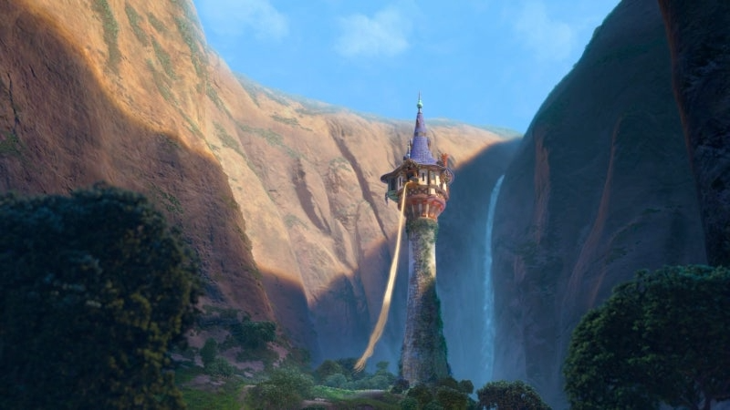
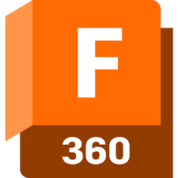
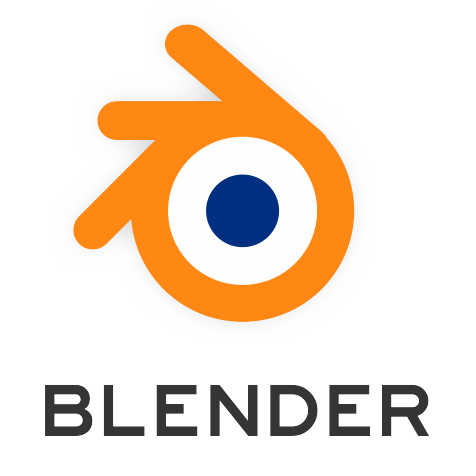
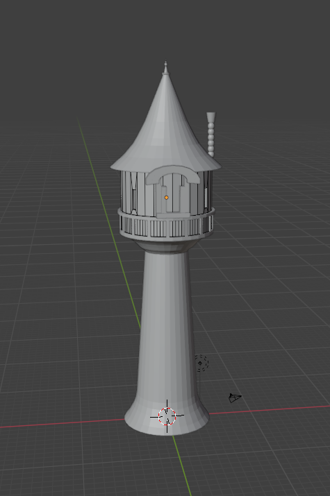

오송고등학교의 미술 창체 동아리 '미술창작부'와 함께 3D 모델링 연합 프로젝트를 진행하였다. 미술창작부(앞으로는 미창부라고 단축)가 논의 끝에 결정한 라푼젤탑에 대해 1학년 부원의 설계도를 받고, 이를 바탕으로 3D 모델링 및 3D 프린터기로 작품을 뽑은 후 최종적으로 다시 미창부에서 점토 등을 이용해 살을 붙여 완성하기로 하였다.
 
하지만 기존에 사용하려고 했던 Fusion360 프로그램이 소지하고 있는 기기의 문제로 갑작스레 사용할 수 없게 되며, 1학년 때 사용했던 Blender를 사용하기로 제작 노선을 틀었다. 최대한 설계도를 바탕으로 큰 틀을 잡고자 하였고, 점토로 붙일 부분을 남겨둔 채 가장 큰 틀과 기본적인 세세한 형태를 잡았다.

3D 모델링을 마친 후, 교내의 3D 프린터기(신도리코 3DWOX 1)을 사용하기 위해 16차시의 온라인 교육을 받고 실제로 작품을 제작하였다. 이때 총 2번의 실패가 있었고 실패한 부분을 바탕으로 하여금 다시 파일을 수정하여 최종적으로 3번째에 성공적으로 작품을 뽑아내었다.
최종적으로 미창부에서 점토를 붙이고 조각한 후 색을 입혀 완성하였다. 이 작품은 오송고의 학술제와 동아리 축제 기간인 12워 23~24일에 교내 1층 로비에 전시되었었다.